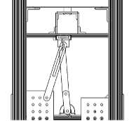
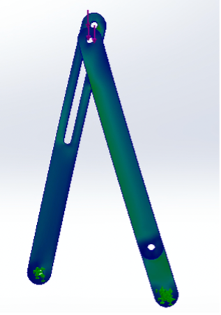
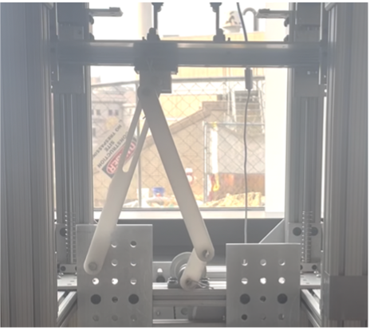

(04)
Linkage System
Designing and iterating a linkage mechanism to convert rotary motor motion into controlled linear motion and maximize button actuation time.
Overview
I worked with a team to design a linkage mechanism that converts the rotary motion of a motor into linear motion for pressing a button. The primary objective was to maximize the amount of time the button remained pressed within a two-minute operating cycle, while satisfying constraints on workspace, geometry, material strength, and motor loading.


Concept Development
We began by exploring several mechanisms inspired by the crank-rocker linkage. We varied link lengths, mounting locations, and slot geometry to control the motion of the output link.
We ultimately selected a slotted-link design because it allowed the mechanism to remain near a vertical position for an extended portion of its motion, increasing the duration for which the button could remain depressed.
Design & Analysis
We modeled the candidate mechanisms in SolidWorks and used motion simulations to evaluate their kinematic behavior. By comparing the position and velocity of the output link over time, we identified the geometry that provided the longest button actuation period.
We also applied Grashof's criterion to evaluate the range of motion of the linkage and performed hand calculations to determine the loads transmitted through the links. Finite Element Analysis (FEA) was then used to verify that the selected link dimensions could withstand the expected loading.


Iteration & Testing
Initial testing confirmed that the mechanism could press the button without stalling the motor, but the slot mechanism caused the assembly to descend much faster than predicted. As a result, the button remained pressed for only 3 seconds during a two-minute test.
We used the test results to refine the linkage geometry. I helped evaluate how changing the link lengths and mounting position would affect the mechanism's range of motion and dwell time. We elongated two links and repositioned the assembly mounting point while retaining the slotted link to minimize system weight.
After updating the design, we repeated the motion analysis and physical testing to validate the revised geometry.
Results
The revised mechanism produced a gradual, controlled descent and successfully held the button for over 41 seconds during the same two-minute test. This represented a 38-second improvement over the initial design.
The project demonstrated the value of combining kinematic analysis, simulation, physical testing, and iterative mechanical design. It also gave me hands-on experience using SolidWorks motion simulation to evaluate mechanism behavior before and after fabrication.